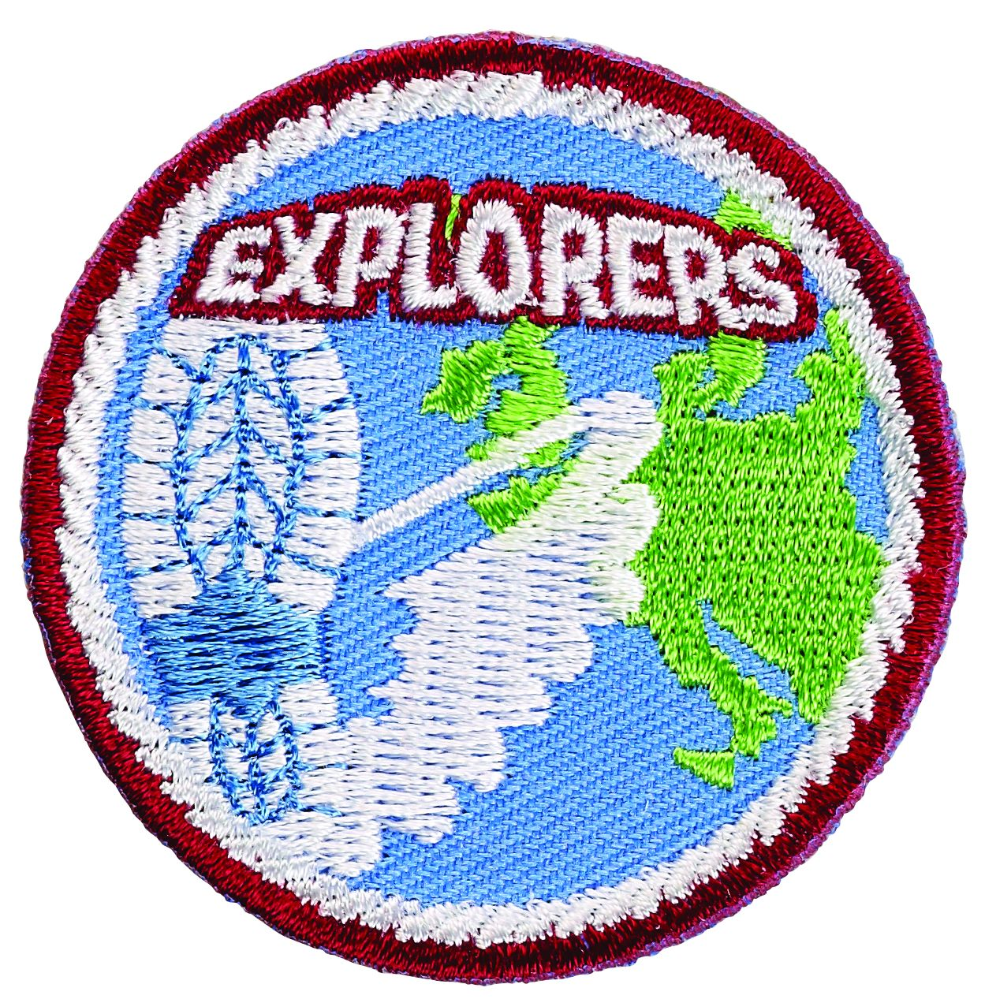
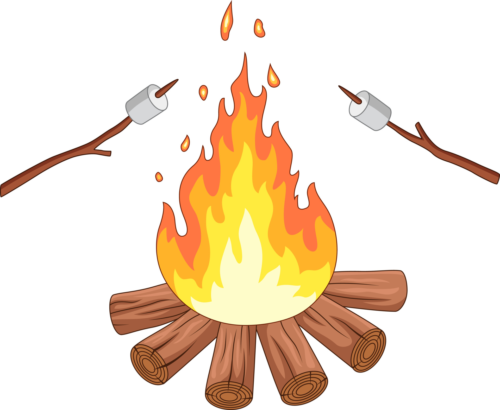

Informatie
Wat zou leuk is aan de groep van de RS is dat zij zelf hun eigen opkomsten en kampen mogen bedenken en uitvoeren.
Hoe vet dat je dan zelf mag bepalen wat je gaat doen met je vriendengroep? Uiteraard is er een paar man begeleiding bij om te helpen waar nodig is! Maar zij zijn er vooral om gezellig mee te doen.
De RS groep draait elke vrijdag avond van 19:30 uur tot 21:30 uur. Ze hebben een eigen lokaal waar zij kunnen zitten.
Daar hebben ze opkomst en bedenken ze om en om wat te gaan doen en worden er zelf veel dingen voorbereid. De opkomsten van de RS verschilt altijd enorm.
De opkomsten zijn vaak creatief! Ze maken zelf lampen, gaan vaak schilderen en met Halloween snijden pompoenen uit.
Ook met spioneren zijn ze creatief en bouwen ze hele vette dingen. Active opkomsten zijn ook niet te missen, spellen in bos, zwemmen, bowlen en soms wel eens boulderen! De scouting achtige activiteiten zijn ook niet te missen, gitaar spelen bij het zelfgemaakte kampvuur, broodjes bakken en knopen leggen word vaak gedaan.
Games en spelletjes spelen zijn ze ook zeker niet vies van! Met Sinterklaas worden er surprises gemaakt, met Kerst gezellig samen gedineerd en met pasen worden er paaseitjes verkocht.
De Rs heeft het maar druk met alle deze leuke activiteiten. Het aller leukste is het scouting zomer kamp, dan mogen ze echt helemaal bepalen wat ze gaan doen, en hoe lang, en waar heen?
Kampen worden daar vaak in het buitenland gedaan met de vetste activiteiten en wat vooral belangrijk is, genoeg chill momenten. Wil jij ook kijkje nemen bij de RS? Kijk op de contact pagina van de website en neem contact met ons op! Wie weet zien wij je dan snel!